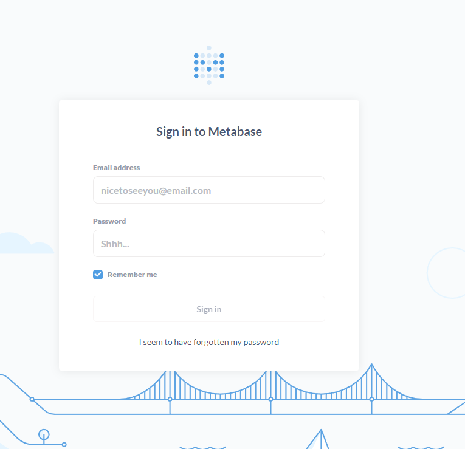

ArmのDocker環境でMetabase構築
以前、MetabaseをEC2のt2.microで構築したのだが、メモリ系が辛いので移行を検討。そして、metabaseとpostgresをサクサクと動かしたかったので、Oracle Cloudのalways free環境（4OCPU、24GB、Arm）を使ってみる。
シェイプの構成
シェイプ: VM.Standard.A1.Flex
OCPU数: 4
ネットワーク帯域幅(Gbps): 4
メモリー(GB): 24
ローカル・ディスク: ブロック・ストレージのみ
[opc@oci-arm metabase]$ cat /etc/os-release
NAME="Oracle Linux Server"
VERSION="7.9"
ID="ol"
ID_LIKE="fedora"
VARIANT="Server"
VARIANT_ID="server"
VERSION_ID="7.9"
PRETTY_NAME="Oracle Linux Server 7.9"
ANSI_COLOR="0;31"
CPE_NAME="cpe:/o:oracle:linux:7:9:server"
HOME_URL="https://linux.oracle.com/"
BUG_REPORT_URL="https://bugzilla.oracle.com/"
ORACLE_BUGZILLA_PRODUCT="Oracle Linux 7"
ORACLE_BUGZILLA_PRODUCT_VERSION=7.9
ORACLE_SUPPORT_PRODUCT="Oracle Linux"
ORACLE_SUPPORT_PRODUCT_VERSION=7.9
Docker
[opc@oci-arm metabase]$ docker-compose -v
docker-compose version 1.29.2, build unknown
[opc@oci-arm metabase]$ docker -v
Docker version 19.03.11-ol, build 9bb540d
[opc@oci-arm metabase]$
ディレクトリ構造
[opc@oci-arm docker]$ tree
.
├── docker-compose.yaml
├── metabase
│ ├── data
│ └── Dockerfile
└── postgres
├── data
└── init
└── create_db.sql
- docker-compose.yaml
version: '3'
services:
metabase:
build: ./metabase
container_name: metabase
ports:
- 3000:3000
volumes:
- ./metabase/data:/metabase-data
environment:
- MB_DB_FILE=/metabase-data/metabase.db
postgres:
image: arm32v7/postgres:latest
ports:
- 5432:5432
volumes:
- ./postgres/data:/var/lib/postgresql/data
- ./postgres/init:/docker-entrypoint-initdb.d
environment:
POSTGRES_USER: postgres
POSTGRES_PASSWORD: postgres
- metabaseのDockerfile
Armなのですんなりとはいかなかった。下記のgithubの記載を参考に。リンク先のDockerfileではubuntuのバージョンが古く、apt-getが動作しなかったので、バージョンを最新にした。
https://github.com/metabase/metabase/issues/13119#issuecomment-1000350647
FROM ubuntu:latest
ENV FC_LANG en-US LC_CTYPE en_US.UTF-8
# dependencies
RUN apt-get update -yq && apt-get install -yq bash fonts-dejavu-core fonts-dejavu-extra fontconfig curl openjdk-11-jre-headless && \
apt-get clean && \
rm -rf /var/lib/{apt,dpkg,cache,log}/ && \
mkdir -p /app/certs && \
curl https://s3.amazonaws.com/rds-downloads/rds-combined-ca-bundle.pem -o /app/certs/rds-combined-ca-bundle.pem && \
keytool -noprompt -import -trustcacerts -alias aws-rds -file /app/certs/rds-combined-ca-bundle.pem -keystore /etc/ssl/certs/java/cacerts -keypass changeit -storepass changeit && \
curl https://cacerts.digicert.com/DigiCertGlobalRootG2.crt.pem -o /app/certs/DigiCertGlobalRootG2.crt.pem && \
keytool -noprompt -import -trustcacerts -alias azure-cert -file /app/certs/DigiCertGlobalRootG2.crt.pem -keystore /etc/ssl/certs/java/cacerts -keypass changeit -storepass changeit && \
mkdir -p /plugins && chmod a+rwx /plugins && \
useradd --shell /bin/bash metabase
WORKDIR /app
# copy app from the offical image
COPY --from=metabase/metabase:latest /app /app
RUN chown -R metabase /app
USER metabase
# expose our default runtime port
EXPOSE 3000
# run it
ENTRYPOINT ["/app/run_metabase.sh"]
- docker-compose
[opc@oci-arm metabase]$ docker-compose up -d
Creating network "docker_default" with the default driver
Creating docker_postgres_1 ... done
Creating metabase ... done
[opc@oci-arm metabase]$ docker ps
CONTAINER ID IMAGE COMMAND CREATED STATUS PORTS NAMES
c74acd420716 arm32v7/postgres:latest "docker-entrypoint.s…" 5 seconds ago Up 4 seconds 0.0.0.0:5432->5432/tcp docker_postgres_1
d15ea2032f2d docker_metabase "/app/run_metabase.sh" 5 seconds ago Up 4 seconds 0.0.0.0:3000->3000/tcp metabase
- 接続確認
http://“Public IP”:3000/auth/login

- PostgreSQLの設定変更
postgresql.confでパラメータ変更
[root@oci-arm data]# grep "share" postgresql.conf
shared_buffers = 2048MB # min 128kB
metabase=# show shared_buffers;
shared_buffers
----------------
2GB
(1 row)
関連しているかもしれない記事
- Dockerのエラー対応（docker Got permission denied～）
- Spark on Docker on EC2環境を構築する
- Fiware/Orionで使うMongoDBへの接続先を変更する
- docker-composeでPostgreSQL構築
- EC2にDockerをインストールしてFIWAREを動かす